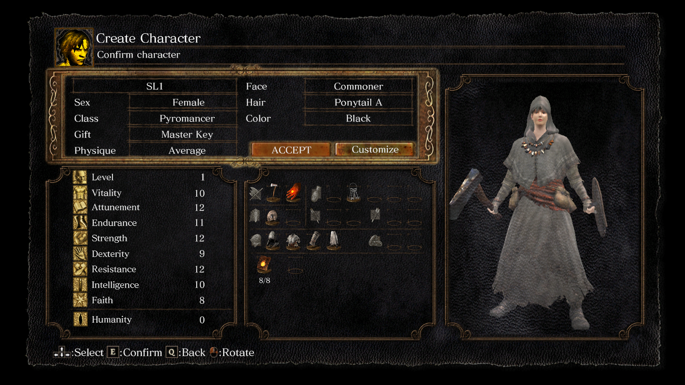

Introduction
This is a guide to your first SL1 run of Dark Souls: Remastered. We will discuss tips and strategies to help you overcome your first SL1 challenge. You might find the following tips useful.
At the character creation screen, choose "Pyromancer" as the starting class because that is the only class that starts you off at SL1. You play as a pyromancer, but the challenge is to never level up because an SL1 run means you must always stay at soul level 1. However, you are allowed to upgrade any weapon of your choosing. Refer to the following image for reference:

Your starting gift can be any item you want. The "Master Key" is recommended. For extra challenge, choose any starting gift but the "Master Key". The Black Firebomb allows you to make quick work of the Asylum Demon.
- Pyromancy is over-powered even for an SL1 character. You can easily defeat most if not all bosses by using pyromancy alone. However, this guide is primarily focused on melee strategies for fighting bosses as an SL1 character. No pyromancy allowed against bosses, not even Power Within.
- The Reinforced Club is one of the best weapons for an SL1 character. The weapon has built-in bleed effect, useful against many bosses. Purchase a number of copies of the Reinforced Club from the Undead Male Merchant at Undead Burg and upgrade each copy along a different elemental path. For example, have one copy of the Reinforced Club upgraded along the magic path, one copy upgraded along the fire path, etc. The best attack of the Reinforced Club is the two-handed R2 because it hits hard and allows you to quickly close the distance.
- Armour is not important for an SL1 character because your character would most likely die to a boss in one or two hits. Prioritize fashion and ensure your character is fast rolling, i.e. be under 25% equip load. If your character would die within at most two hits, it might as well die in style. However, you might want to equip armour pieces that provide high defense to help you tank one or more hits, thus affording you opportunities to learn a boss' attack patterns.
- Use a bow and arrows to help you pull one enemy at a time for one-to-one combat. Crossbows are not as effective for pulling because you must free aim a crossbow.
- Rings and other equipment that have special effects are particularly useful. For example, the Ring of Favor and Protection (aka the FAP ring) boosts your maximum HP, Stamina, and equipment load. To raise your maximum equipment load even further, stack the effect of the FAP ring with Havel's Ring and Mask of the Father. As another example, the Grass Crest Shield boosts your Stamina regeneration. The effect stacks with the effects of Mask of the Child, Cloranthy Ring, and Green Blossoms (and Power Within).
- For best damage output, equip the Red Tearstone Ring and decrease your HP low enough to trigger the ring's effect. The Symbol of Avarice is the best item for lowering your HP. Farm the head piece as soon as possible. The earliest in the game where you can farm the Symbol of Avarice is at Sen's Fortress.
- Familiarity is key to a successful SL1 playthrough. You should know the game well enough to recognize what is ahead of you, including enemies and terrains. You do not need to know the attack patterns of every enemy in the game. However, it helps to learn the attack patterns of some powerful enemies such as Serpent Soldier, Silver Knight, Black Knight, Berenike Knight, etc. The Silver Knights at Anor Londo can be one of the biggest hurdles in an SL1 playthrough, but it does not have to be that way. Equip a medium shield, such as the Grass Crest Shield, and learn to parry each Silver Knight you encounter. Similarly, learn to parry the Serpent Soldiers at Sen's Fortress and The Duke's Archives.
Learn from your mistakes and the experiences of other players. An SL1 playthrough can be frustrating, but also rewarding. Your squishy character would die over and over again. Do not let that fact deter you. With a little bit of determination and hard work, you can overcome the challenge. At times, you might be stuck on a particular area or boss and unable to figure out a strategy. Learn from no-hit runners and incorporate their strategies into your gameplay. You might find the following videos useful:
Dark Souls - SL1 No Hit Run (no leveling up)

Dark Souls Remastered - SL1 No-Hit Any%

Dark Souls Remastered SL1 All Bosses 0 Hit Run (No Pyromancy)